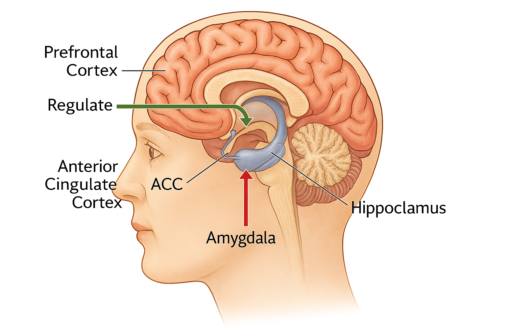
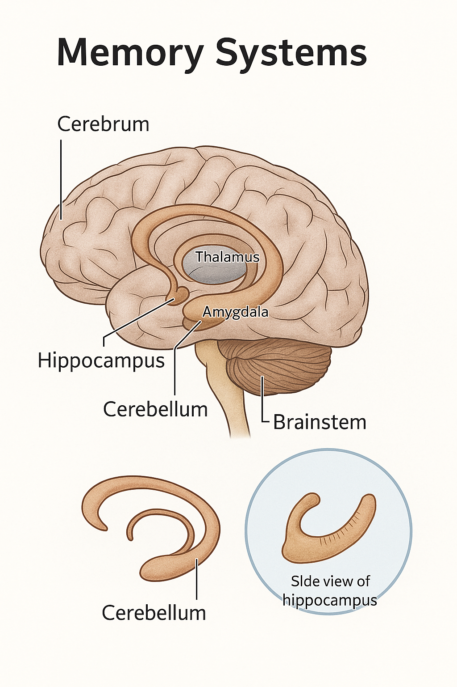
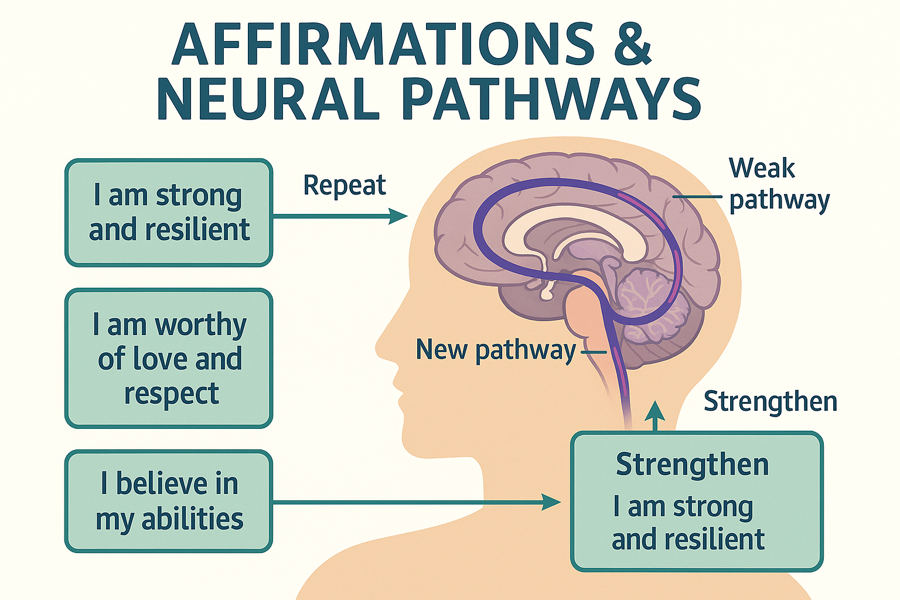

Understand why the brain does what it does — and how to nudge it. These sections pair clear visuals with practical, tiny actions that stack into real change.
1. Emotions & Regulation
Your brain has fast alarm systems (amygdala) and slower regulation systems (prefrontal cortex). Stress feels like the alarm shouting louder than the calm voice. You can train the calm voice.

Missing image: sites/img/ns-emotion-brain.png
Amygdala (fast alarm) vs. prefrontal cortex (guide/brake). Label the feeling + longer exhale helps the guide take charge.
Try now: Breathe in for 4, out for 6 (90 seconds). Whisper a label: “anxious”, “irritated”, “flat”. Label = less chaos.
2. Habits & Loops
Habits run on a loop: cue → routine → reward. Don’t fight the loop; keep the cue and reward, swap the routine.
Missing image: sites/img/ns-habit-loop.png
Keep the reward, swap the routine. Same loop, kinder outcome.
Example: Afternoon slump (cue) → scrolling (routine) → stimulation (reward). Swap to a brisk 2-minute walk + water → same reward, less crash.
3. Memory & Learning
Memories don’t “download” in one go — they are built. The hippocampus encodes new information; during sleep, memories are consolidated and distributed across the cortex. Emotion, meaning, and repetition make pathways easier to re-activate.

Missing image: sites/img/ns-memory-systems.png
Encode with focus, stabilise with sleep, strengthen with spaced retrieval.
How to remember more (and forget less)
Spaced repetition
Review just as you’re about to forget: Day 1 → Day 3 → Day 7 → Day 14 → Day 30. Short sessions beat cramming.
Plant example: Revisit sowing depths on these days; add a quick quiz to yourself.
Retrieval > re-reading
Close the notes and pull facts from memory. Testing yourself strengthens recall far more than re-reading.
Affirmations aren’t magic words. They prime attention (via your brain’s filtering systems) so you notice evidence that fits the phrase. When you pair a phrase with a tiny action, you create proof — and the circuit strengthens.

Missing image: sites/img/ns-affirmations.png
Say it, then do a 60-second action that makes it “true enough” today.
Make them work (4 rules)
Believable now: If “I am confident” feels false, use a ladder: “I am learning to back myself.”
Present & specific: “I can take one step now.” beats “I will be successful.”
Paired with action: 60 seconds of behaviour (send one email, drink water) = proof.
Frequent & short: 10–20 honest repeats daily > long scripts you never use.
Everyday sets (with a matching action)
Overwhelm
“I can do one small thing.” → Set a 2-min timer and start.
Confidence
“I am learning out loud.” → Share one honest update.
Health
“I fuel my body kindly.” → Drink one glass of water now.
Grief
“Love and sorrow can coexist.” → Text a safe person a memory.
Money
“1% better today.” → Cancel one unused subscription.
Growing
“There’s always something to sow.” → Plant salad leaves.
Troubleshooting
Feels fake? Lower the claim: “I’m willing to try 60 seconds.”
Keep forgetting? Anchor to a cue (kettle, brushing teeth, door).
No momentum? Record a voice note of your phrase and play it while doing the tiny action.
Stuck on negatives? Reframe the opposite: from “I can’t cope” → “I can ride this wave for one minute.”
Print our A4 cards to keep on the fridge or in a notebook.
The ANS regulates arousal. The sympathetic branch handles fight/flight. The parasympathetic handles rest/digest. Under overload we can drop into shutdown (freeze/collapse). Learning to steer state is a core skill.
Missing image: sites/img/ans-three-states.png
States shift with cues. Use breath, posture, and attention to nudge towards safety.
The information on this page is for general understanding and support. It is not a substitute for professional medical, psychological, or legal advice. If you feel unable to keep yourself safe or someone else is at risk, call 999 (UK) immediately. If you’re outside the UK, contact your local emergency number.
For non-emergency concerns, consider speaking with a qualified health professional or an appropriate support service listed on our Wellbeing pages.